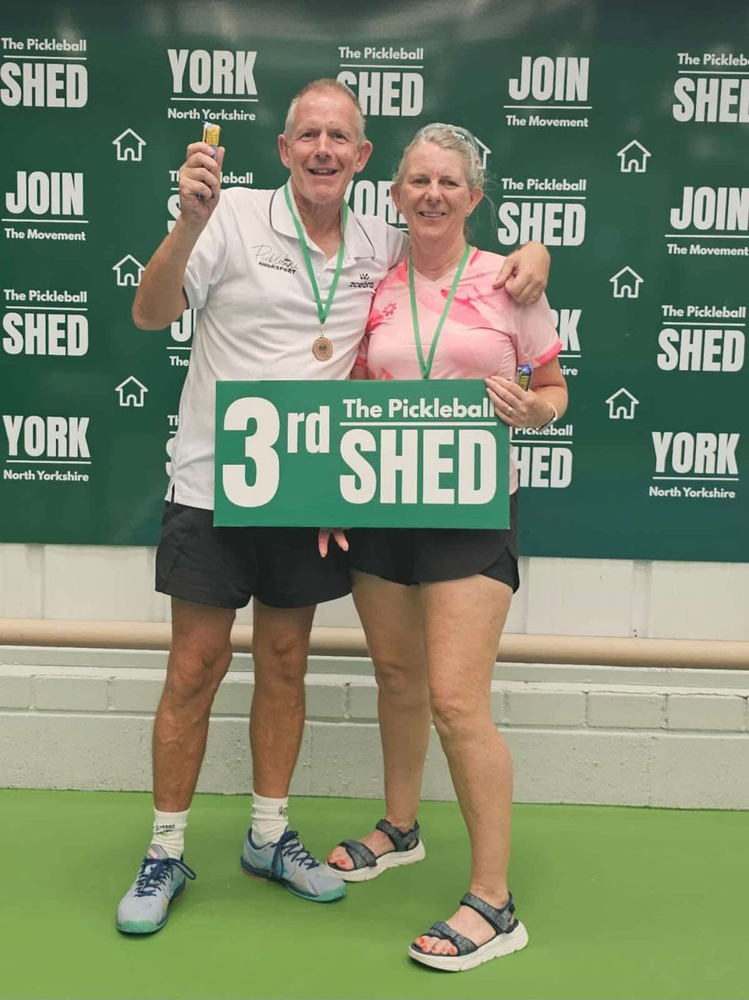

York has a dedicated pickleball venue: The Pickleball Shed, a converted bakery warehouse just north of the city that opened in November 2025 as North Yorkshire's first pickleball-only facility. It's one of our favourite places to play in the UK: five indoor courts built for pickleball and nothing else, a busy tournament calendar, and a strong pool of local players. We took 3rd place together in one of its tournaments, and it's an easy add-on to our Leeds home club.
Guide checked: November 2026 · Last played: June 2026

The Pickleball Shed is on the Greenpark Business Centre on Goose Lane, just outside Sutton-on-the-Forest, north of York. Five local players converted an empty bakery warehouse into five dedicated courts with cushioned acrylic surfaces, permanent nets, proper lighting and heating, and runoff behind and between courts.
The Shed hosts a lot of tournaments, and they're the best way for a visitor to get competitive games. There are plenty of strong players here, but many of them play in private sessions rather than open play.
You don't need to be a member. Courts are £28 an hour peak and £24 off-peak for non-members, and everything — court hire, open play, coaching and events — is booked through The Pickleball Shed app. The venue also runs the North Yorkshire League, a women's league and inter-club matches, and players can register for a DUPR ID through the club.
Our take: a great facility, and one of our favourite places to play in the UK. Dedicated indoor courts with permanent nets, a cushioned surface and heating are still rare here. To play the best players, enter a tournament — most of the strongest games happen in private sessions.
| Court quality | ★★★★★ |
| Quality of games | ★★★★☆ |
| Ease of joining | ★★★★☆ |
| Competitive level | ★★★★☆ |
| Value | ★★★★☆ |
| Wanderers rating | 9/10 |
Would we go back? Yes — it's one of our UK favourites. Five dedicated indoor courts with heating make it a year-round option in a part of the UK where most pickleball is still played in leisure-centre sports halls. For another Yorkshire stop, see our Sheffield guide.
A Better-run leisure centre in Acomb with four pickleball courts marked out in the sports hall, with portable nets. Pay-to-play, booked through Better.
A smaller Better venue on the east side of the city, with two indoor wood courts and portable nets. Pay-to-play.
The Shed is on a business park outside Sutton-on-the-Forest, not in the city centre. A car or taxi is the practical way to get there.
Court hire, open play and events all book through The Pickleball Shed app, so set it up before your visit.
The strongest local players mostly play in private sessions. Tournaments are where you'll meet them — check the Shed's event calendar before you travel.
Court hire is £24 an hour off-peak — £6 each for a game of doubles. Members get £4 off every hour, worth it only if you're staying a while.
York and Leeds are under an hour apart, so it's easy to pair the Shed with sessions at our home club — see our Leeds guide.
The Pickleball Shed on Goose Lane, just outside Sutton-on-the-Forest north of York, is North Yorkshire's first pickleball-only venue, with five indoor cushioned acrylic courts, permanent nets, lighting and heating.
No. Non-members can book courts at £28 an hour peak or £24 off-peak (prices checked November 2026). Courts, open play and events are booked through The Pickleball Shed app.
Yes. The Pickleball Shed has five dedicated indoor courts. Energise Leisure Centre (4 courts) and Burnholme Sports Centre (2 courts), both run by Better, also offer indoor pay-to-play pickleball in sports halls.
It's on a business park outside Sutton-on-the-Forest, north of the city, so a car or taxi is the practical option. Energise and Burnholme are easier to reach from central York.
The Pickleball Shed gives York something most UK cities still don't have: five dedicated, heated indoor courts with a cushioned acrylic surface, bookable by anyone without a membership, and a regular tournament calendar that brings out the region's best players. It's a drive out of the city, but it's one of our favourite places to play in the UK. If you're touring the north of England, pair it with Leeds and Sheffield, or head west to Wrexham.